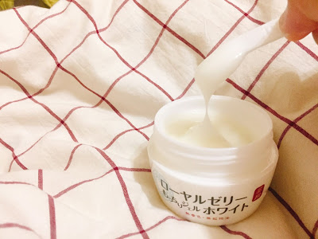
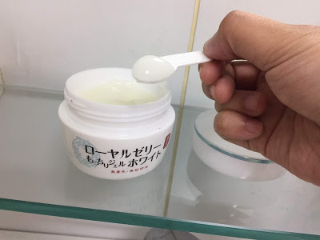

_________________________________________________________________________________
大家，會不會常有這種困擾
網路上資訊太多
常有「換季最該注意的肌膚問題」或是
「OO已經退流行!現在XX才是王道」這種文章
當然這些文章裡面都有分析
但是，要怎麼分辨哪些才是真的能挽救肌膚問題的方法呢?
1.
檢視自己肌膚困擾
對症下藥，需要先做的就是找到問題點，一次解決到位！
▲黯沉 ▲毛孔 ▲膚色不均 ▲緊實度不足 ▲細紋 ▲缺乏彈性 ▲肌膚乾燥
隨著年齡增長，以上問題或多或少都會浮現，也越來越難輕鬆解決...
常常因為這樣，需要長期時間和金錢，購入各種「對症下藥」的保養品。
但是經過多重工序的保養，反覆拉扯肌膚
其實才是產生細紋的推手！
所以，找出自己最想、最該解決的困擾，才是真正「對症下藥」的捷徑！
2.
檢視自己的膚質
臉部，一直都是最顯眼，且需要特別呵護的肌膚。
所以塗抹在臉上的保養品，更是不能輕忽！必須了解自己的膚質，才能不走冤枉路！
★乾性肌
＝肌膚缺乏水分。毛孔小，但肌膚明顯乾燥缺乏彈性，
容易黯沉。
需要使用
補水、保濕且較滋潤質地
的保養品！
★油性肌
＝T字部位容易出油。毛孔大，肌膚有彈性不容易產生細紋。
但肌膚乾燥也是出油原因之一，保養需
注重清潔、保濕補水
！
★中性肌
＝人人都想要的完美肌膚。毛孔細緻，肌膚有彈性、光澤。
只需要注重基本清潔和保濕，就能維持得來不易的健康膚質！
★混合肌
＝多是T字部位油性肌+兩頰乾性肌。保養須
注重清潔與分部保養！
★敏感肌
＝不管哪種膚質都有可能擁有的狀態。
皮膚薄，容易泛紅、保養需要
加強保濕
，且保養品
種類越少越好
，以避免過多刺激！
保養品，其實就像是肌膚的好閨蜜
需要先花時間相處、磨合
找到適合、跟肌膚合得來的產品，多麼難！
也是因為不希望和我有相同困擾的人
不斷重複嘗試，所以這次帶著自己的肌膚檢測和肌膚成果
▲混合肌
▲黯沉
▲缺乏彈性
▲乾燥
分享我這次約1個月的改變!!
這次，
體驗的是
OZIO QQ潤白凝露

它的質地很特別，是接近半透明的凝露
看起來很滋潤，但塗上手背試試觸感跟延展性的時候
覺得很清爽～
吸收速度也很快，光是初次見面就很有好感~
但為什麼會選擇它呢
從剛剛的肌膚困擾來看，我最需要改善的就是
黯沉，其次才是
肌膚彈性
再加上我的混和肌既要
清爽又必須有滋潤質地

QQ露(品名太長，請容許我這樣叫它，
擁有的效果是
美白、保濕、撫平細紋、改善黯沉、肌膚緊實彈性
內含64種濃度高達97%美容精華液，滿滿都是肌膚養分
更強化了雙重W有效成分，美容專門-
胎盤素+緩和肌膚刺激-
甘草酸鉀
最優秀的地方是
1瓶抵6瓶 ！
QQ露=化妝水、乳液、乳霜、美容精華液、面膜、眼霜
不僅減少拉扯肌膚產生的傷害，
還能夠不降低品質的進行肌膚保養
1天才30元！
先不要算它本身的CP值
光是1天30元能抵過6瓶，這種划算優惠就必須推薦!!!!!
最後給大家看看我使用約1個月的對比照
到現在都還在愛用中(笑
也歡迎大家有什麼使用後的新驚喜，跟我分享哦!!